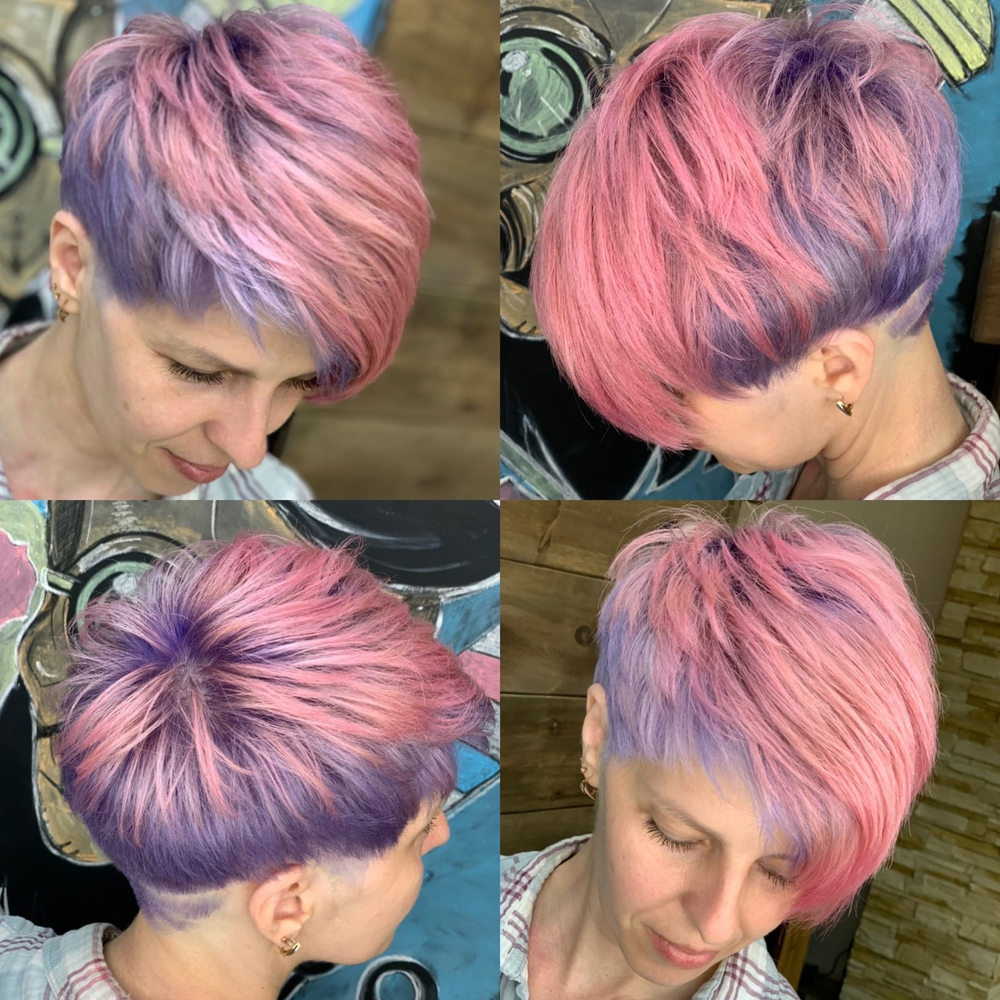
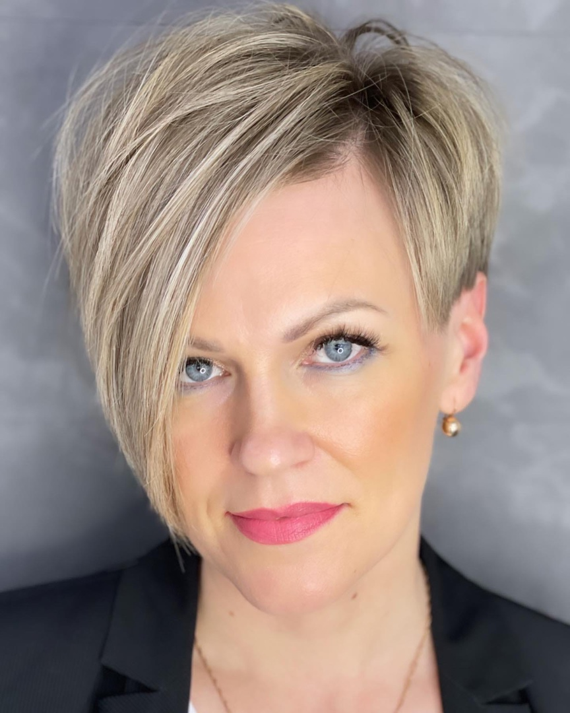
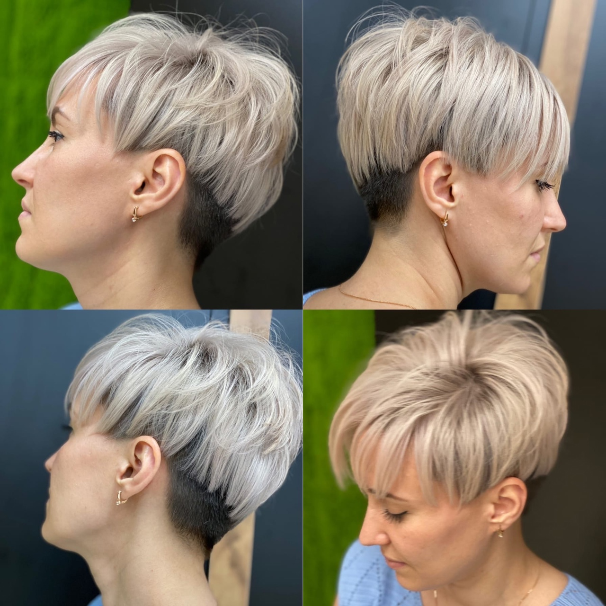
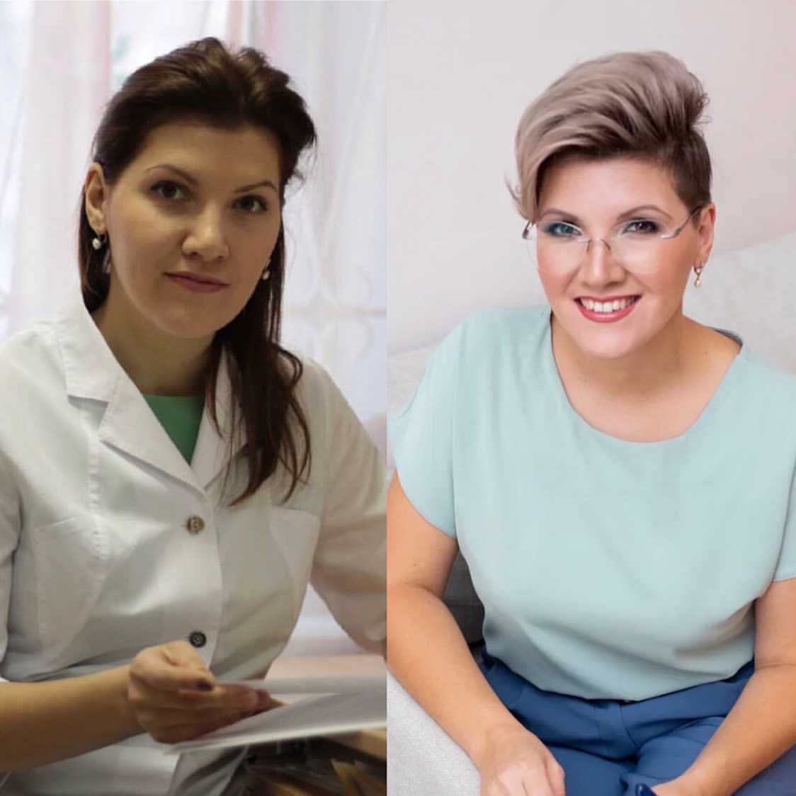
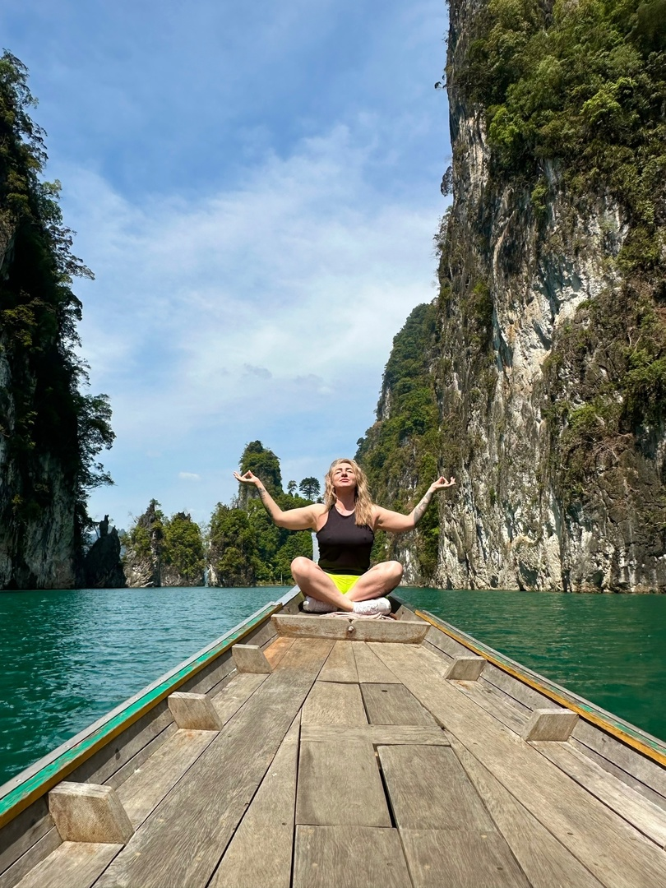

Эта история моей подруги и моего любимого мастера парикмахера Инны Радченко из Тюмени. И, нет, она не проходила наши курсы. Хотя мы часто приводим её в пример в разных уроках. Во истину, её личный бренд шикарен. Но мне всё равно пришлось повоевать с ней за название её студии. В итоге отвоевала «Студию Инны Радченко».
И, я считаю, что важно рассказывать истории разных людей. Чтобы показать какие навыки важны для достижения успеха. Их путь.
Ремарка. Я очень долго уговаривала её поделиться историей. Нам часто тяжело говорить о своих достижениях. Мы боимся осуждения, зависти, да и, в целом, много скромничаем. И вот эти все поговорки «Деньги любят тишину». А делиться важно и нужно, так мы помогаем другим людям. Очень надеюсь на вашу поддержку. Инна классная!
Я задала Инне вопросы, о том, как она развивалась. Какой у неё был путь.
— Когда ты приехала в Россию?
— Я приехала в 2014 из Донбасса. Я начала жизнь с полного нуля. И когда я приехала в Тюмень я не знала никого и ничего. Не было денег, от слова совсем. Короче, мы когда приехали, за нашу квартиру платили волонтеры. А также еду, одежду и так далее нам просто приносили добрые, хорошие люди.
Приезд в Тюмень – был моей первой поездкой в Россию. До этого я не была в России ни разу.
— А когда ты приехала ты уже умела стричь, была парикмахером?
— В каком году я начала стричь? В 2012. Да, я приехала в 2014 году, еще была очень-очень-очень сырая. Я была парикмахером в кавычках.
В Донбассе я ходила по парикмахерским и предлагала свои деньги для того, чтобы просто постоять возле мастеров и посмотреть.
В Тюмени я устроилось работать в самую простую парикмахерскую. Никто мне не приводил клиентов, и ничему не учил.
— Как ты повышала мастерство?
— Брала деньги в кредит на обучения. С кредитных карт оплачивала. Договаривалась на рассрочку от салона, они платил за моё обучение, а я потом отрабатывала. Инструмент в кредит покупала. Также в рассрочку у торговых представителей.

Ну, и я очень много перестригла моделей бесплатно, потому что мне нужно было учиться, мне нужно было показать себя, привлечь клиентов, показать свое мастерство, потому что у меня не было клиентов. И чтобы каждая, практически, вторая модель, да что там вторая, первая, оставались в качестве моих клиентов.
Для чего я еще брала моделей бесплатно? Для того, чтобы пополнить свое портфолио, и люди могли зайти на мою страницу ВК, посмотреть мои работы. Соответственно, для того, чтобы взять где-то свои работы, мне нужно было где-то взять людей, поэтому я привлекала для начала бесплатно.
Студенты охотно соглашались стричься бесплатно, и потом была у меня такая акция «Стрижка за репост». То есть тогда Нельзяграма не было, я ВКонтакте выкладывала работу с определенным человеком и просила чтобы он делал репост на свою страницу. Таким образом, обо мне узнала половина Тюмени.
Так что, вот такой был мой путь. Но бесплатно я перестригла очень много людей.
И через год у меня уже была практически полная запись.
Ну да, денег у меня на обучение не было, на рекламу ВКонтакте тоже не было, иногда их не было даже на то, чтобы купить себе поесть, не то что на какие-то продвижения, рекламу блогеров и т.д. и т.п. Вот так вот.
И, самое интересное то, что люди, которые видели мои работы на странице у моих моделей, они сами добавлялись в друзья, либо спрашивали в личке сколько стоит такая стрижка.

Конечно же, первоначально у меня стоимость стрижки была три копейки, потому что мне нужно было получить клиентов и хоть на что-то жить.
При этом, такую историю со стрижкой за репост, я вообще нигде не видела, никто мне не подсказал. Я сама это придумала, потому что я понимала, что мне надо откуда-то брать поток людей, а откуда его брать я не знала. Тогда возникла эта идея и она сработала!
Да, в принципе, до сих пор это работает, так как потом дальше уже началась другая история с нельзяграмом.
Клиенты ко мне приходили, я выкладывала с ними работу в сторис и их отмечала, они отмечали у себя на странице и вот, пожалуйста, бесплатная реклама.
Ну плюсом, соответственно, отсюда еще пошел сарафан.То есть ребята, которые подстриглись хорошо, бесплатно, они, естественно, приходили в свой круг общения и просто с восторгом рассказывали о том, что вот это офигенно, бесплатно стригут, так круто.
Ну тут же еще работу большую нужно вести над коммуникабельностью!
Потому что если ты всю стрижку будешь молчать и стоять с каменным лицом, то понятное дело клиентскую базу ты не наработаешь.
А я умею общаться)
— Когда открыла свой салон?
— В 2018 открыла свой первый салон. Три года назад я купила помещение в собственность и сейчас вот, здравствуйте. Я работаю 25 дней в месяц, и у меня полная запись на месяц вперед.
— Почему решила открыть свой салон?
— Слушай, решение открыть свой салон пришло потому, что у меня просто уже не было возможности взять клиентов. У меня, например, ходила вся семья: мама, папа, плюс там двое сыновей. А я просто уже не могла их всех записать, некуда было. И я решила взять себе помощника. Я нашла девочку, обучила её, чтобы хотя бы записывать ей мужчин, мужей, их детей. То есть, по большей части, мне нужен был мужской мастер, потому что женщины практически полностью занимали всю мою запись.
Получается, я человека обучила под себя, то есть сама, за свой счет, абсолютно бесплатно.
После открытия первой маленькой студии было решено взять еще мастеров.

Помещение было в аренде, его нужно было окупать. Но это очень сложно. На самом деле, с этими мастерами и со всеми этими открытиями, много геморроя. Честно. Но я это сделала!
Сначала, да, мы работали в маленьком помещении, потом объединились с мастером по маникюру. И открыли на двоих салон уже большой, целых 200кв.м, но тоже в аренду.
Потом это помещение выставили на продажу, то есть опять предстояло, в очередной раз, переезжать и делать ремонт.Это сильно выматывало и я решила купить помещение в ипотеку. Сейчас у меня студия 180 кв.м. Как же это выгодно! Я плачу за ипотеку дешевле, чем за аренду и оно только моё!
— Слушай, а почему именно короткие стрижки? Это же твое основное направление?
— Так, почему я мастер коротких стрижек? Потому что когда я изначально пришла в парикмахерское дело, я вообще не хотела стричь. А потом, волей-неволей, случайно меня занесло в салон и меня поставили, практически насильно, в мужской зал. Так я научилась стричь мужские стрижки.
— А что нравится в своей работе? Что вдохновляет?
— Слушай, это какой-то очень интересный вопрос, я даже не знаю, как правильно на него ответить. Так мне все нравится в моей работе, во-первых, потому что в том что я делаю, есть эксклюзивность. Не все, могут стричь короткие стрижки, многие их боятся. А я бесстрашна в этом плане.
Я заметила, что короткие стрижки это прям реальная боль у мастеров, потому что их практически никто, ну очень единичные мастера, умеют делать. Я считаю, что это мой конек.

И, безусловно, когда приходит девушка, и ты делаешь ей такую прическу, что она меняется в образе, ты кайфуешь от того, как круто выглядит человек. Кайфуешь от эмоций человека, что он чувствует себя увереннее.
Это один из самых важных факторов. Вот этот эстетический оргазм, когда ты понимаешь, что ты делаешь охуенно, и ты не боишься это делать.
Мой девиз по жизни: "Жизнь слишком коротка, чтобы иметь скучные волосы!"
И когда, если не сейчас?

***
Такая история!
Инна тот человек, который по-настоящему ценит труд и свой и чужой. Она продолжает постоянно развиваться, ездит на кучу разных мастер-классов, обучений.
У неё можно действительно многому научиться. Особенно советую парикмахерам заглянуть на страницу Инны, посмотреть что и как она делает.
Тем более у неё недавно вышел бесплатный урок по самой продаваемой короткой женской стрижке.
Лови ссылку на урок в закрепленном посте.
От чистого сердца надеюсь, что эта история тебя вдохновит. Потому что, лично я, искренне восхищаюсь её трудолюбием и открытостью людям.
З.Ы. Как тебе такие истории? Интересно узнавать путь других людей?